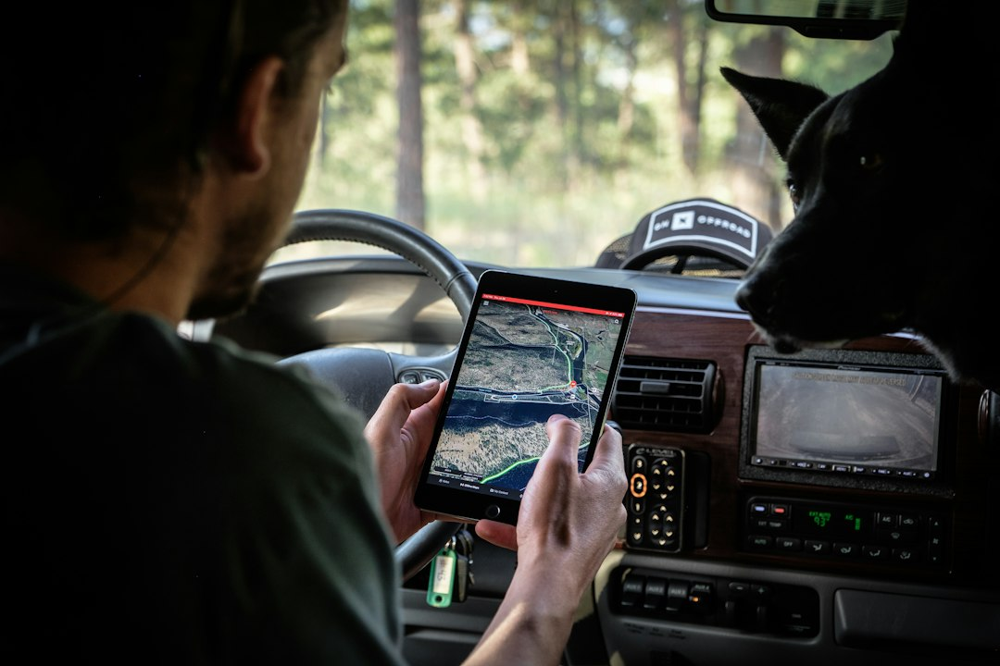

Riduzione Sprechi e Costi nella Sicurezza Outdoor: Come AURA Proximity Trasforma la Gestione Operativa

Riduzione drastica degli sprechi temporali e dei costi operativi per Motociclisti, Camperisti, Atleti, Responsabili Sicurezza Cantieri (D.Lgs 81/08) e Guide Outdoor
- Spesso nei viaggi in colonna o in ambienti isolati la mancanza di una rete affidabile genera rischi e inefficienze operative.
- Costi e perdite derivanti da ritardi nei soccorsi, incidenti e disorganizzazione pesano gravemente in termini economici e di sicurezza.
- AURA Proximity di RM Studio è una soluzione SaaS integrata che minimizza costi e sprechi tramite radar tattico, chat mesh P2P e comunicazioni web senza app.
Analisi approfondita della notizia e delle implicazioni operative
L'ambito outdoor e di sicurezza cantieristica è fortemente esposto a problematiche operative causate dalla lontananza dalle reti cellulari tradizionali e dall'impossibilità di intervenire tempestivamente in caso di incidenti o smarrimenti. Per motociclisti che viaggiano in colonna, camperisti in aree remote, atleti impegnati in escursioni e guide outdoor, l’assenza di connettività 4G rappresenta una criticità cruciale. Anche i responsabili della sicurezza nei cantieri regolamentati dal D.Lgs 81/08 devono fronteggiare sfide analoghe nella gestione di lavoratori isolati o in ambienti complessi dove la comunicazione immediata è fondamentale.
Questa situazione concorre a incrementare i tempi di risposta durante emergenze, generando sprechi temporali e costi nonché possibili danni anche legali dovuti a infortuni non tempestivamente gestiti. Ne deriva quindi una evidente esigenza di strumenti tecnologici affidabili, immediati e che riducano l'affidamento a infrastrutture di rete esterne impossibili da garantirsi in molte circostanze.
Le conseguenze e i costi di non agire
Quando in viaggi in colonna o durante attività outdoor si verificano eventi critici come perdite di orientamento, cadute o infortuni, l'incapacità di lanciare un allarme rapido a causa dell'assenza di rete, espone gli operatori a gravi rischi. Per i lavoratori isolati sul campo, l’assenza di un sistema di monitoraggio e comunicazione aumentano esponenzialmente i tempi di autorizzazione e intervento delle squadre di soccorso.
Le ripercussioni economiche di queste inefficienze sono notevoli: perdita di ore uomo, costi per inattività e risarcimenti, aumento delle responsabilità di sicurezza e danni reputazionali. A livello organizzativo, anche la gestione e coordinamento del personale in mobilità viene compromessa, generando ulteriori sprechi di risorse e stress operativo.
Come AURA Proximity risolve il problema
AURA Proximity, il SaaS sviluppato da RM Studio, si pone come una soluzione tecnologica intuitiva, versatile e senza precedenti per affrontare queste criticità. Si basa su un radar di prossimità tattico e una chat mesh Peer-to-Peer (P2P) completamente Web, eliminando la necessità di installare app e dipendere da reti cellulari esterne.
Funziona direttamente dal browser, permettendo un uso immediato e universale senza complicazioni. Il sistema integra un Co-Pilota Vocale a mani libere per una comunicazione sicura durante la guida o l’attività outdoor, mentre il rilevamento automatico di impatti e cadute (sistema Man-Down con sensibilità superiore a 3G) assicura l’invio automatico di SOS via WhatsApp con la posizione esatta e un’accurata bussola direzionale 3D per facilitare le operazioni di localizzazione dei soccorritori.
Queste caratteristiche consentono di ottimizzare drasticamente tempi di intervento, ridurre costi di coordinamento e migliorare la sicurezza complessiva degli operatori. La flessibilità di scelta tra il Pass Viaggio Singolo a €4.90 e il Piano Pro mensile a €19 permette di adattarsi sia a esigenze occasionali che permanenti con un investimento facilmente giustificabile dai risparmi ottenuti.
| Aspetti di Gestione | Gestione Tradizionale | Con AURA Proximity |
|---|---|---|
| Comunicazione tra membri in viaggio/attività | Dipendenza da rete cellulare 4G o app dedicate con problemi di copertura | Chat Mesh P2P 100% Web accessibile via browser senza app |
| Monitoraggio sicurezza e allarmi in caso di cadute | Sistemi limitati o nessun monitoraggio real-time affidabile | Rilevamento impatti Man-Down >3G con invio SOS automatico |
| Navigazione e localizzazione durante viaggi in colonna | Mancanza di un sistema integrato, uso di GPS standard o binocoli | Radar tattico con bussola direzionale 3D integrata e Co-Pilota Vocale |
| Spese per emergenze e ritardi interventi | Elevati, dovuti a inefficienze e coordinamento manuale | Ridotti grazie a interventi più rapidi e gestioni ottimizzate |
💡 Ti è stato utile questo approfondimento?
Condividilo con un collega o un amico del settore Motociclisti, Camperisti, Atleti, Responsabili Sicurezza Cantieri (D.Lgs 81/08) e Guide Outdoor a cui potrebbe interessare!
FAQ - Domande Frequenti
1. AURA Proximity necessita di un’app da scaricare per funzionare?
Non è necessario scaricare nessuna app poiché AURA Proximity funziona completamente via browser Web, garantendo facilità di accesso e aggiornamenti continui senza ingombri di spazio sul dispositivo.
2. Come funziona il rilevamento automatico delle cadute e l’invio di SOS?
Il sistema Man-Down utilizza un sensore di impatto con soglia superiore a 3G, che al rilevamento di una caduta significativa invia automaticamente un messaggio di emergenza tramite WhatsApp con la posizione precisa all’unità di riferimento.
3. È possibile utilizzare AURA Proximity in assenza totale di copertura 4G o WiFi?
Sì, grazie alla tecnologia Mesh P2P, la comunicazione avviene indirettamente tra i dispositivi connessi in prossimità, senza dipendere da rete cellulare esterna o Internet.
Inizia Subito
Pass Viaggio Singolo a €4.90 o Piano Pro a €19/mese. Nessuna app da installare.
Fonti Ufficiali e Risorse Esterne
Scopri l'Intelligenza Artificiale per la tua attività
Ottimizza i processi e aumenta le vendite con le soluzioni B2B di RM Studio.
Scopri AURA Proximity